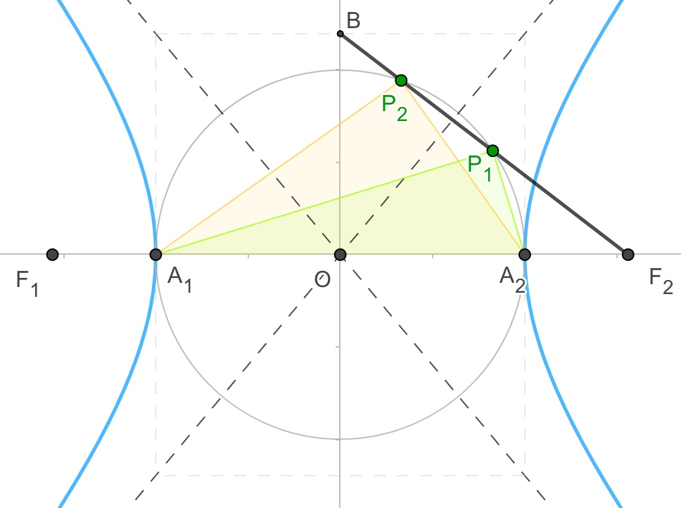
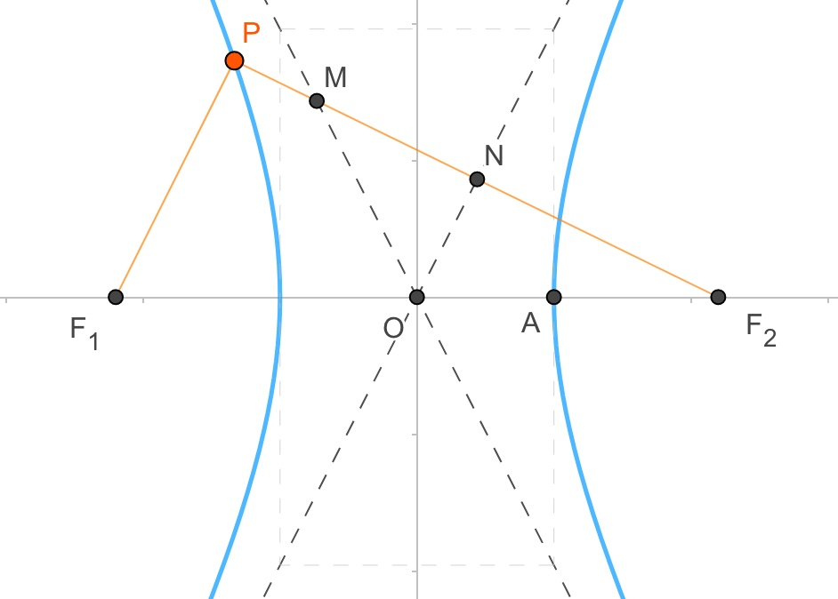
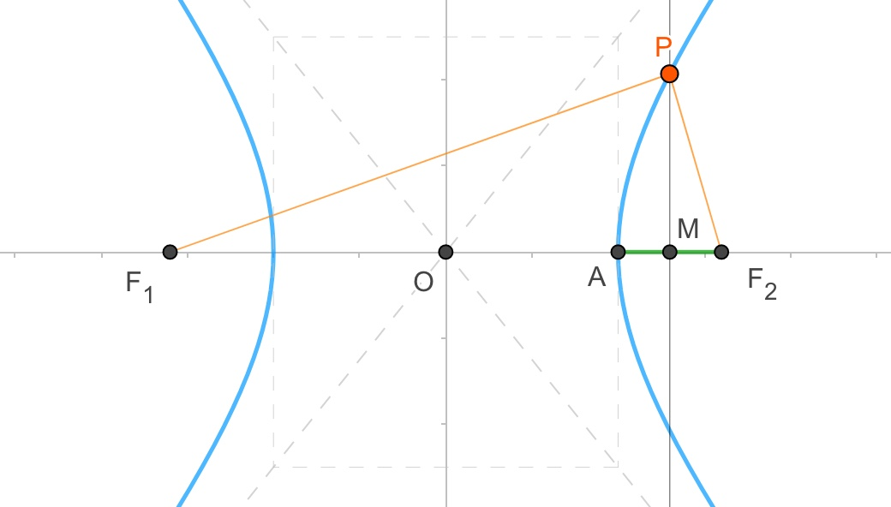
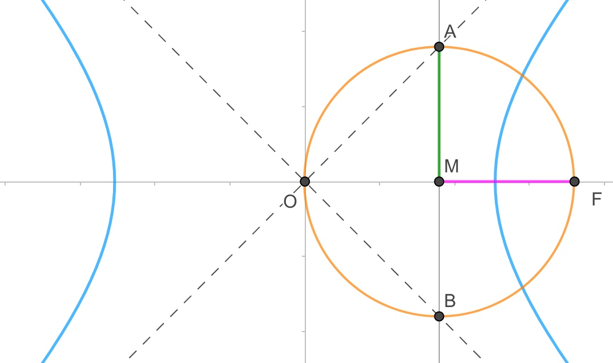
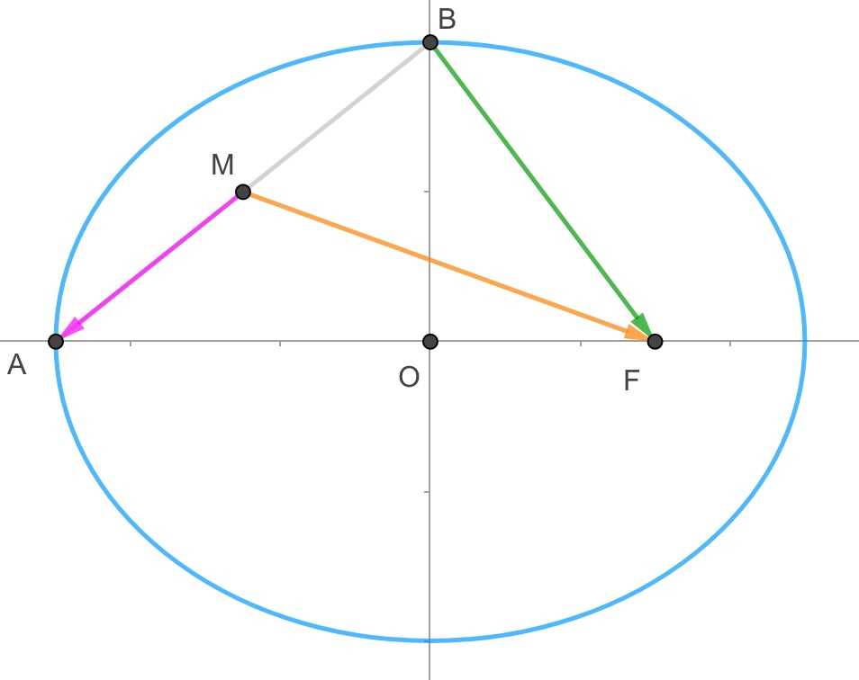
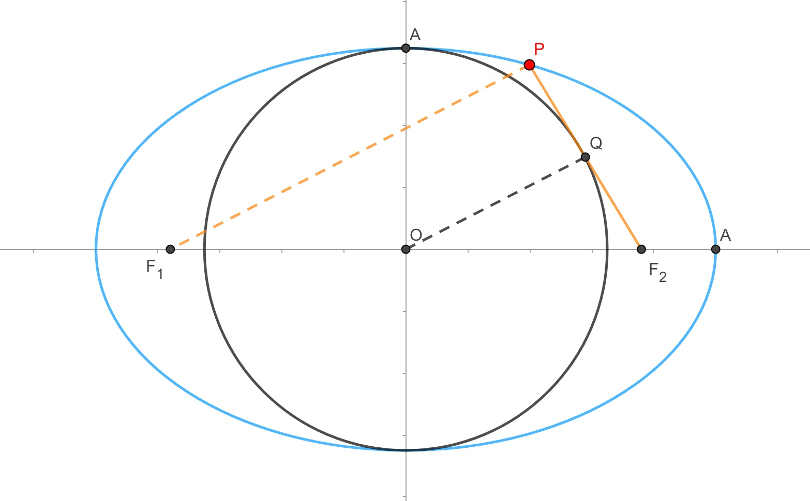
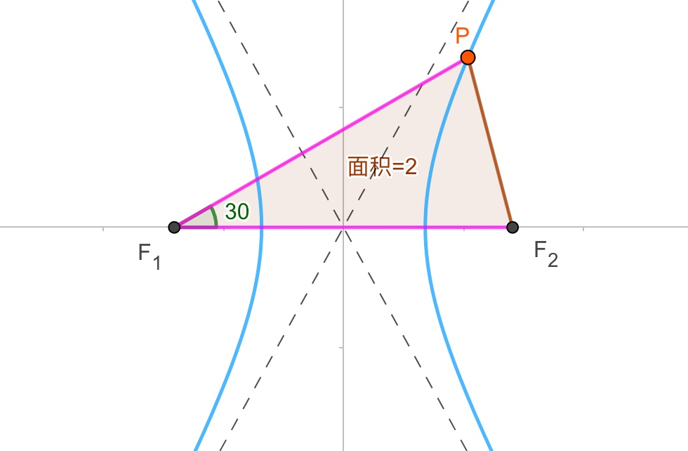
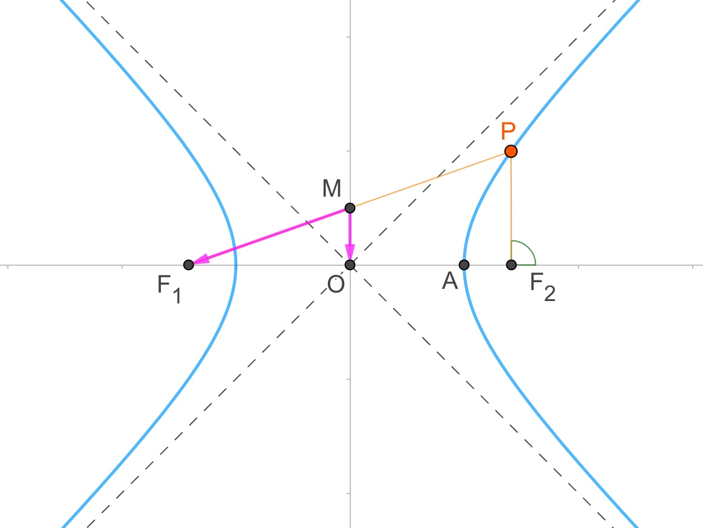

常用
已知双曲线x2a2−y2b2=1(a,b>0)的左,右两焦点分别为F1,F2,点P是其右支上一点
【离心率】例题0326H:
已知双曲线x2a2−y2b2=1(a,b>0),实轴分别为A1,A2,右焦点为F
B(0,b)是虚轴端点,若在线段BF上(不含端点)存在不同的两个点Pi(i=1,2),
使得ΔPiA1,A2构成以A1,A2为斜边的直角三角形,则双曲线离心率范围=()
小蒋的解答(2019-03-26):

知识点1:(初中)圆中直径所对圆周角为直角....................
作以A1,A2为直径的圆
ΔPiA1,A2构成以A1,A2为斜边的直角三角形,即可等效为Pi在圆上
∴Pi是圆和线段BF2的交点,即圆和线段BF2有两个不同的交点
知识点2:圆与直线相交,点线距离公式....................
圆心到直线的距离<圆的半径,此处半径为a
易得:圆心(0,0),直线方程bx+cy−bc=0
∴点线距离=|b×0+c×0−bc|b2+c2√=bcb2+c2√<a
====以下部分为(初中/高中基础)化简知识====
消去b整理得:c4−3a2c2+a4<0,两边同除a4得:e4−3e2+4<0
得:3−5√2<e2<3+5√2,以及双曲线1<e
得:1<e2<3+5√2,得1<e<1+5√2 (∗1∗)
====以上部分为(初中/高中基础)化简知识====
知识点3:圆与直线相交,点线距离公式....................
当B点在圆内时,圆与线段的交点也之有一个
∴圆的半径<线段OB长,即a<b (∗2∗)
知识点4:双曲线abc关系....................
c2=a2+b2 (∗2∗)
知识点5:双曲线离心率....................
e=ca,对(∗2∗)(∗3∗)式通过(初中知识)化简易得2‾√<e (∗4∗)
根据(∗1∗)(∗4∗)得最后结论:2‾√<e<1+5√2

【离心率】例题0326G:
如图,已知双曲线x2a2−y2b2=1(a,b>0)的左,右两焦点分别为F1,F2,点P是其左支上一点
且PF1⊥PF2,PF2与两条渐近线交于M,N两点,点N恰好平分线段PF2,则双曲线离心率=()

小蒋的解答(2019-03-26):
知识点1:(初中)三角形中位线....................
N为PF2中点,O为F1F2中点
∴NO是ΔPF1F2中位线
NO//PF1
∵PF1⊥PF2
∴NO⊥PF2,即NO⊥NF2
知识点2:双曲线焦点到渐近线的距离为b....................
双曲线焦点到渐近线的距离为NF2=b
∴PF2=2b
知识点3:双曲线定义,焦半径....................
PF2−PF1=2a
∴PF1=2b−2a
∴NO=b−a
知识点4:(初中)勾股定理....................
在RtΔNOF2中,NO2+NF22=OF22
即:(b−a)2+b2=c2
化简得:b=2a (∗1∗)
知识点5:双曲线abc关系....................
c2=a2+b2 (∗2∗)
知识点6:双曲线离心率....................
e=ca,对(∗1∗)(∗2∗)式通过(初中知识)化简易得e=5‾√
【离心率】例题0326F:
已知双曲线x2a2−y2b2=1(a,b>0)的左,右两焦点分别为F1,F2,A为双曲线的右顶点
线段AF2的垂直平分线交双曲线与点P,且|PF1|=3|PF2|,则双曲线离心率=()
小蒋的解答(2019-03-26):

设AF2的中点为M
知识点1:双曲线定义,焦半径....................
PF1−PF2=2a
∵|PF1|=3|PF2|
∴|PF1|=3a,|PF2|=a
知识点2:通过坐标求长度....................
A(a,0),F2(c,0),得中点M(a+c2,0)
得MF2=c−a2
∴P点横坐标x为a+c2
知识点3:(初中)勾股定理....................
在RtΔMPF2中:MP2=PF22−MF2=a2−(c−a2)2
∴P点纵坐标y的平方为a2−(c−a2)2
把P点的坐标代入双曲线可得:(a+c2)2a2−a2−(c−a2)2b2=1
化简得:😞😞😞居然发现化简出来一个四次方程
取消知识点3
知识点4:双曲线第二定义....................
双曲线上点P到焦点F2的距离比上到准线x=a2c的距离为离心率e
即aa+c2−a2c=e
即11+e2−1e=e
得e=17√−12
【离心率】例题0326E:
设双曲线x2a2−y2b2=1(a,b>0),若直线x=a2c与两条渐近线交于A,B两点,
相应的焦点为F(c,0),若以AB为直径的圆敲好经过F点,则双曲线离心率=()
小蒋的解答(2019-03-26):

设圆心为M,由题意可知MA=MF
知识点1:通过坐标求长度....................
MF=c−a2c
A点为渐近线y=bax与直线x=a2c的交点
A点横坐标为x=a2c,代入渐近线可得A点纵坐标y=ba×a2c=abc
∴MA=abc
∵MA=MF
∴abc=c−a2c
化简得:a=b (∗1∗)
知识点2:双曲线abc关系....................
c2=a2+b2 (∗2∗)
知识点3:双曲线离心率....................
e=ca,对(∗1∗)(∗2∗)式通过(初中知识)化简易得e=2‾√
【离心率】例题0326D:
已知椭圆C:x2a2+y2b2=1(a>b>0)的左顶点为A,上顶点为B,右焦点为F
设线段AB的中点为M,若2MA−→−⋅MF−→−+BF−→−2=0,则离心率=()
小蒋的解答(2019-03-26):

方法:向量坐标法....................
步骤1:建立坐标....................
题目已有坐标
步骤2:写点,写线....................
O(0,0),F(c,0),A(−a,0),B(0,b)
AB中点M(−a2,b2)
MA−→−=(−a2,−b2)
MF−→−=(c+a2,−b2)
BF−→−=(c,−b)
步骤3:运算....................
MA−→−⋅MF−→−=−a2×(c+a2)+(−b2)×(−b2)=b24−a24−ac2
BF−→−2=BF−→−⋅BF−→−=c×c+(−b)×(−b)=a2
∴2(b24−a24−ac2)+a2=0
得:a2+b2−2ac=0(∗1∗)
知识点1:椭圆abc关系....................
a2=b2+c2 (∗2∗)
知识点2:椭圆离心率....................
e=ca,对(∗1∗)(∗2∗)式通过(初中知识)化简易得e=3‾√−1
【离心率】例题0326C:
如图,已知椭圆C:x2a2+y2b2=1(a>b>0)的左,右两个焦点分别是F1,F2,点P在椭圆C上
线段PF2与圆x2+y2=b2相切于点Q,且点Q为线段PF2的中点,则离心率为=()

小蒋的解答(2019-03-26):
连接P,F1,连接QO
知识点1:椭圆焦半径....................
椭圆定义可得:PF1+PF2=2a
知识点2:(初中)三角形中位线....................
点O为F1F2中点,点Q为PF2中点
在ΔPF1F2中,PF1=2QO=2b
结合知识点1结论:PF2=2a−2b
∴QF2=a−b
知识点3:(初中)勾股定理....................
在ΔPF1F2中,PF1=2QO=2b
在RtΔQOF2中,QO2+QF22=OF22
即:b2+(a−b)2=c2 (∗1∗)
知识点4:椭圆abc关系....................
a2=b2+c2 (∗2∗)
知识点5:椭圆离心率....................
e=ca,通过对(∗1∗)(∗2∗)式的化简易得e=5√3
====以下是(初中)化简知识====
只要知道abc的两个方程,即可解得a,c关系
通常,如果abc都没有特定值,就可以特殊值化,通常设b=1
(∗2∗)式减(∗1∗)式得2a−2=1,a=32,得c=5√2
得e=ca=5√3
也可以按传统方式进行运算化简:
这里先消去c,(∗2∗)式减(∗1∗)式得2ab−2b2=b2,
得b=23a,代入(∗2∗)式,得e=ca=5√3
【离心率】例题0326B:
若双曲线E:x2a2−y2b2=1(a,b>0)的左,右两个焦点分别是F1,F2,P为E右支上一点,
|PF1|=|F1F2|,∠PF1F2=30o,ΔPF1F2的面积为2,则a=()
小蒋的解答(2019-03-26):

知识点1:三角形面积公式....................
SΔ=12⋅|PF1|⋅|F1F2|⋅sin∠PF1F2
2=12⋅2c⋅2c⋅sin30o
得:c=2‾√
知识点2:余弦定理....................
|PF2|2=|PF1|2+|F1F2|2−2|PF1|⋅|PF1|⋅cos∠PF1F2
|PF2|2=(2c)2+(2c)2−2⋅2c⋅2c⋅3√2
|PF2|2=(8−43‾√)c2
|PF2|=(6‾√−2‾√)c
知识点3:双曲线定义....................
|PF1|−|PF2|=2a
2c−(6‾√−2‾√)c=2a
a=1+2‾√−3‾√
【离心率】例题0326A:
已知双曲线C:x2a2−y2b2=1(a,b>0)的左,右两个焦点分别是F1,F2,P为双曲线上一点,
线段PF1与y轴的焦点M恰好是线段PF1的中点,MF1−→−−⋅MO−→−=14b2,其中O为坐标原点,
则双曲线C渐近线方程为(),离心率为()
小蒋的解答(2019-03-26):

知识点1:向量投影法则(数量积)....................
MF1−→−−⋅MO−→−=MO−→−⋅MO−→−
|MO−→−|2=14b2
|MO−→−|=12b
易得:MO是ΔPF1F2底边PF2上的中位线,即MO//=12PF2
∴PF2=b,且PF2垂直于x轴
知识点2:双曲线通径....................
通径:2|PF2|=2b2a
∴|PF2|=b2a
根据知识点1结论得:b=b2a
∴ba=1
知识点3:双曲线abc关系....................
c2=a2+b2
∴ca=2‾√